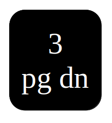

Publications and Preprints
4. Pu-Zhao Kow and Jenn-Nan Wang, Landis-type conjecture for the half-Laplacian, arXiv:2106.06120.
3. Pu-Zhao Kow, Yi-Hsuan Lin and Jenn-Nan Wang, The Calderón problem for the fractional wave equation: Uniqueness and optimal stability, arXiv:2105.11324.
2. Pu-Zhao Kow, Gunther Uhlmann and Jenn-Nan Wang, Optimality of increasing stability for an inverse boundary value problem, arXiv:2102.11532.
1. Pu-Zhao Kow, On Landis Conjecture for the Fractional Schrödinger Equation, arXiv:1905.01885.
Publications5. Pu-Zhao Kow and Jenn-Nan Wang, On the characterization of non-radiating sources for the elastic waves in anisotropic inhomogeneous media, preprint, to appear in the SIAM Journal on Applied Mathematics (SIAP).
4. Pu-Zhao Kow and Masato Kimura, The Lewy-Stampacchia Inequality for Fractional Laplacian and Its Application to Anomalous Unidirectional Diffusion Equations, Discrete and Continuous Dynamical Systems Series B, doi:10.3934/dcdsb.2021167, arXiv:1909.00588.
3. Pu-Zhao Kow and Jenn-Nan Wang, Reconstruction of an impenetrable obstacle in anisotropic inhomogeneous background, IMA Journal of Applied Mathematics 86 (2021), Issue 2, 320-348, MR4246858, doi:10.1093/imamat/hxab002.
2. Fioralba Cakoni, Pu-Zhao Kow and Jenn-Nan Wang, The interior transmission eigenvalue problem for elastic waves in media with obstacles, Inverse Problems & Imaging 15 (2021), No. 3, 445-474, MR4235665, doi:10.3934/ipi.2020075.
1. Pu-Zhao Kow and Ching-Lung Lin, On decay rate of solutions for the stationary Navier-Stokes equation in an exterior domain, J. Differential Equations 266 (2019), 3279-3309, MR3912683, doi:10.1016/j.jde.2018.09.002.
Unpublished Manuscripts2. Pu-Zhao Kow and Jenn-Nan Wang, Unique continuation from the infinity for the fractional Laplacian with a drift term, unpublished manuscript.
1. Pu-Zhao Kow and Jenn-Nan Wang, Strict monotonicity of eigenvalues and unique continuation for spectral fractional elliptic operators, unpublished manuscript.
Doctoral DissertationPu-Zhao Kow. Unique Continuation Property of the Fractional Elliptic Operators and Applications. PhD thesis, National Taiwan University, College of Science, Department of Mathematics, 2021, doi:10.6342/NTU202100933.
- Thesis defense [ pdf format | svg format ]
- previous slide: or or
- next slide: or or
